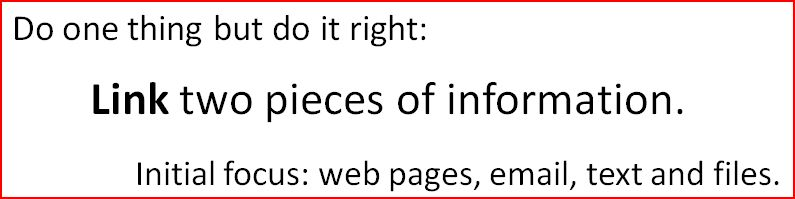

The Linnk project is centred on developing a standards-oriented prototype with the objective:

If you are interested in trying out the prototype please use the following contact form.
Have a look at the tutorials to get an impression of what Linnk does: